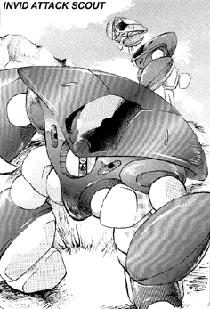

The following material is from
THE THIRD INVID
WAR, a fan supplement by
Dave Deitrich and
Chris
Meadows. Please feel free to use, copy, and distribute
it as you see fit. All we ask is that you give proper credit to us and do not
claim that it is your own work. Comments and suggestions are welcome.
THE INVID ATTACK SCOUT
BACKGROUND

The Attack Scout first appeared in late 2043 in the skies over North
America, but soon spread to areas throughout the globe. This new
high-speed mecha quickly became a feared aerial combatant, as it was faster
and more maneuverable than a VAF-6 Alpha Fighter. The design also had
heavier armor and more powerful plasma cannons than its predecessors, making
it an even more dangerous threat to older REF mecha. By the winter of 2043
the Attack Scout became the most common Invid mecha around, constantly
conducting high-speed patrols in search of resistance fighters.
At first appearance, the Attack Scout looks very similar to the old
Armored Scout. However, a close examination will reveal many
differences. The upper body of the mecha is a single super-hard metal
plate that curves around the rear of the mecha and ends about halfway
underneath it. There is a single slit in the rear of this plate where
the main engine thruster is located. The engine itself seems to be a
combination thruster/antigravity unit. It is tremendously efficient,
allowing the Attack Scout to achieve very high speeds with little
thrust. The sensor eye is identical to the old Scout, but new plasma
cannons are located on either side of it, just under the edge of the
plate. The forearm shields of the mecha are much larger, though the
legs are skinnier. The Attack Scout is red in color, just like its
cousins.
The most unique feature about the new scout is that it can "convert"
into a special configuration for high-speed aerial attacks. The legs
fold into the main body and the claw units retract into the forearm
shields. The scout then pulls up its forearm shields, completely
covering the legs and weak areas on the lower front main body. At this
point the scout looks like a jet-propelled arrow head. By rotating the
forearm shields down slightly the scout can form a small "gunsight" in
the front of the armor, allowing the Invid to use its protoculture
sensor and plasma cannons. (The effect is something like a cartoon
oyster opening its shell slightly to peek outside) The shields can
quickly rotate back to protect these vulnerable systems if necessary.
Attack Scouts are NEVER encountered alone. The smallest number they are
ever found in is a trio, though they can often be encountered in FAR
greater numbers. The scout is much weaker on the ground, so if it is
ever necessary for a patrol to investigate something on land, ONE mecha
will descend and look around while the other two remain in the air to
cover it. The landed scout will quickly take off if it is attacked or
startled. Attack Scouts will seldom explore caves or underground
structures. They will instead call in a patrol of
Invid Sentinels to investigate while
they remain above to attack anyone who emerges.
SCHEMATICS
 Click on the icon to the left to view the schematics of the Attack Scout,
based on data collected by REF Intelligence.
Click on the icon to the left to view the schematics of the Attack Scout,
based on data collected by REF Intelligence.
RPG STATS
Invid Name: "Igiai"; REF Nickname: "Kamikaze Clams"
Vehicle Type: Fast Attack Mecha
Crew: One; Stage One Invid Pilot
M.D.C. BY LOCATION
+ Hand/Claw (2) 10 each
Forearm Shields (2) 150 each
+ Upper Arms (2) 25 each
+ Legs & Feet (2) 25 each
& Main Engine Thruster (rear) 30
+ Pulse Beam Cannons (2) 20 each
+* Sensor Eye 25
+** Lower Front Main Body 50
*** Upper/Rear Main Body 200
+ Pilot's Compartment 20
Notes:
- +
- These areas are fully protected when the mecha is flying (the
forearm shields are pulled in and form a flush surface with the
upper main body). If the Invid lowers the forearms to fire at an
enemy or simply take a quick look around, then the beam cannons and
the sensor eye may be targeted, but this is an EXTREMELY difficult
shot; -5 to strike in addition to normal penalties.
- *
- The sensor eye is the most vulnerable place on the Invid's mecha
body. Destruction of the sensor eye will kill/destroy the mecha
and pilot (goes right through crew compartment). However, it is a
small target protected by surrounding shielding, thus, to hit it
the player/character must make a called shot and is at -3 to
strike.
- **
- Depleting the M.D.C. of the lower front main body will shut the
mecha down completely. Depleting the lower front main body M.D.C.
and crew compartment M.D.C. will blow the Invid to pieces.
- ***
- Depleting the M.D.C. of the upper/rear main body will NOT shut the
mecha down. Instead, any damage to the main body will go directly
to the pilot's compartment. (!!) Once the pilot's compartment is
destroyed the mecha will effectively be dead.
- &
- The Main Engine Thruster is NOT protected by the Upper Main Body
and is thus always vulnerable to attack. However, the engine is
recessed into the mecha, so the only way to hit it is to make a
called shot AS THE MECHA PASSES! -4 to strike in addition to
normal penalties.
SPECIFICATIONS
- Flight:
- Stationary hover to 4690 mph (Mach 7.0) maximum, making the
attack scout effectively transatmospheric (able to blast into
outer space under its own power). However, at speeds greater
than Mach 4.0 (2680 mph) the mecha becomes effectively
unmaneuverable and can only travel in a straight line (-3 to
hit due to speed, but the Invid cannot dodge). Cruising speed
for reconnaissance is 120 to 300 mph (192 to 480 kmph).
- Running:
- 30 mph (48 kmph). Rarely runs.
- Jumping:
- 100 ft (30.5 m) up or across. Rarely jumps.
- Height:
- 8.3 ft (2.5 m) with legs extended. 5 ft (1.5 m) retracted.
- Width:
- 12.3 ft (3.75 m)
- Length:
- 10.7 ft (3.25 m)
- Weight:
- 4.75 tons
- Cargo:
- Can carry up to one ton.
- Abilities:
- Pilot Mecha - 85%
- Recognize Human Machinery - 25%
- Prowl - 45%
- Detect Ambush - 45%
- Detect Concealment - 45%
- Track - 45%
WEAPON SYSTEMS
- DUAL PULSE BEAM CANNONS. Two small Invid beam cannons are mounted
in the main body of the mecha, just to either side of the sensor eye.
The weapons are fixed forward, but the inner nozzle of each cannon
can rotate to a maximum of 30 degrees in any direction. Though both
cannons fire in unison, one cannon will still function if the other
is destroyed.
These weapons are blocked and cannot when the forearm shields are
retracted. However, the Invid can "crack" the shields by leaning
them down slightly, forming a gap large enough to fire through.
- Primary Purpose: Assault
- Range: 5000 ft (1500 m)
- Damage: One single blast (rare) does 2D6 M.D., dual blasts
(simultaneous shots, same target) do 4D6 M.D. and a burst (6
blasts, all at same target) does 6D6 M.D.
- Rate of Fire: Four attacks per melee. Dual blasts and bursts
both count as ONE attack.
- Payload: Unlimited
- Bonuses to Strike: +1 to strike, plus protoculture targeting
bonuses.
- HAND-TO-HAND COMBAT. The Attack Scout can engage in hand-to-hand
combat if necessary. This is rare, though, as the Invid must lower
its forearm shields in order to strike.
- Attacks Per Melee: 4
- Hand to Hand Bonuses: +1 to strike, +3 to parry, +1 to dodge on
the ground, +5 to dodge in flight, +7 to dodge at speeds between Mach
3 and Mach 4, +1 to roll with impact.
- RAMMING ATTACK. The Attack Scout will sometimes launch a "suicide"
attack on an enemy by accelerating as fast as possible and then
ramming the enemy mecha. This attack is especially likely if the
scout is badly damaged or surrounded, with no chance of escape. This
attack is very likely to destroy the scout as well, so it is usually
used only in desperation.
- Bonuses to Strike: +2
- Damage: 1D4x100 M.D. (!!) to the target. The SAME amount
of damage is inflicted on the upper main body of the scout. The scout is
automatically destroyed if it receives 200 M.D. or more of damage.